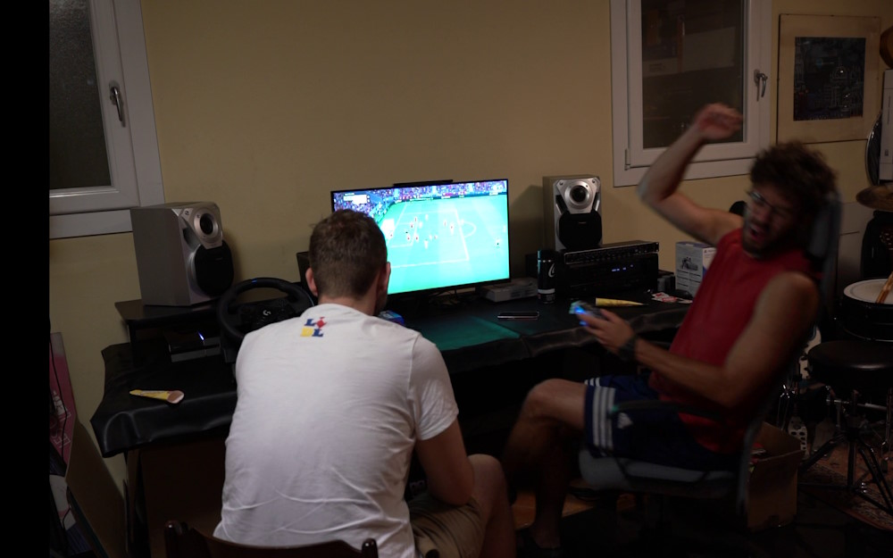
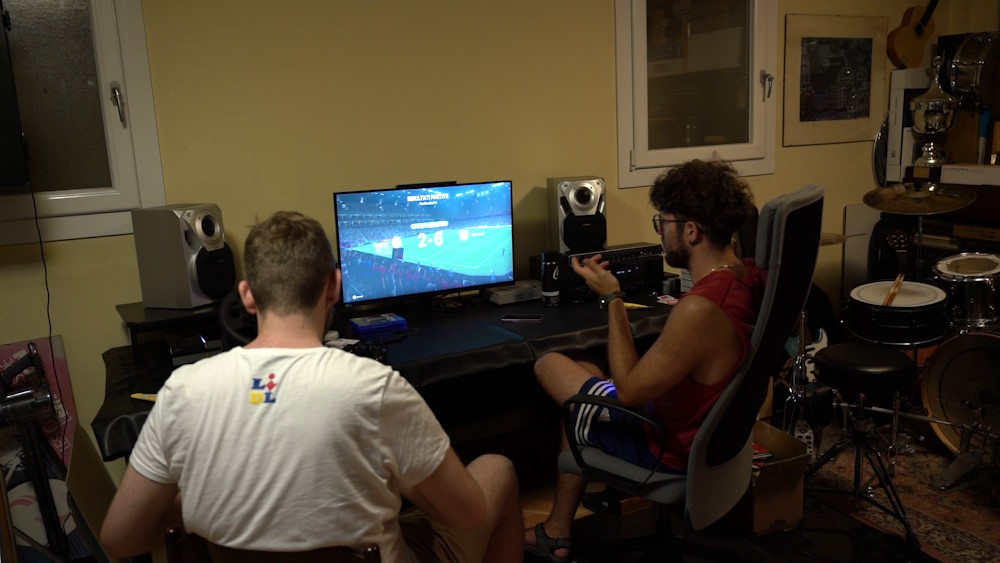
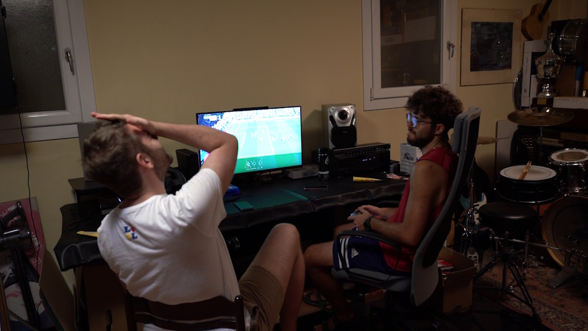
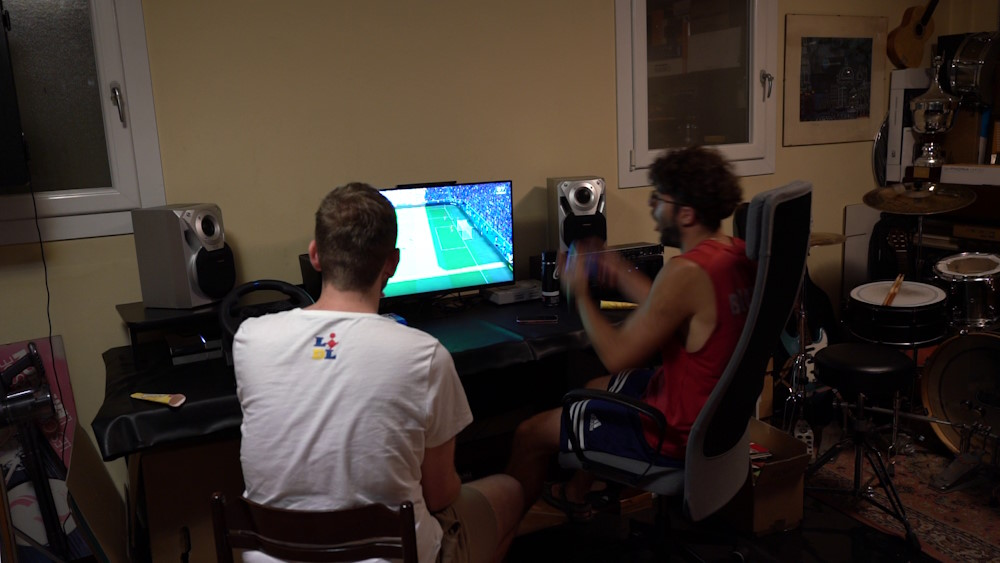
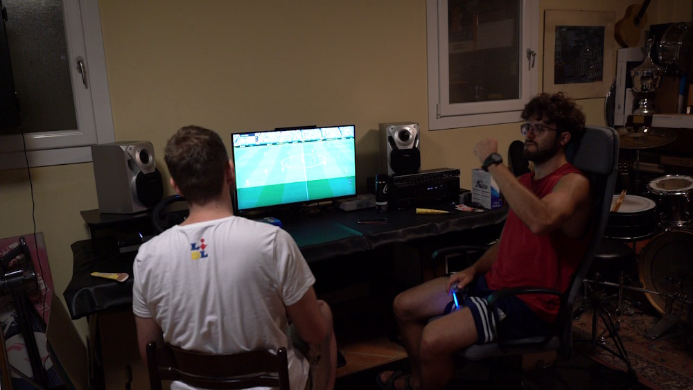

3 (7) - 3 (6)


Lisbona – Il terzo capitolo della saga Cesare–Francesco si apre con la speranza di una svolta. E, per un momento, sembra che la scintilla possa davvero diventare fiamma. Ma il copione, almeno per ora, resta crudele: Cesare colpisce, ma Francesco mantiene il trono. Anche stasera tre match. Tra rigori, falli, interventi illegale l'atmosfera si incendia.


Il derby portoghese è un concentrato di emozioni. Di María apre le danze al 24’, Musa raddoppia al 37’: 2-0 Benfica e Cesare in controllo. Ma il Porto di Francesco reagisce: Taremi al 57’ accorcia. Eustaquio al 63’ pareggia. Otávio all’81’ ribalta la partita. Sembra finita, ma Aursnes al 85’ la riapre. Si va ai rigori. Francesco sbaglia il suo, Cesare no. È vittoria. Prima e unica della serata.
Incubo rumeno per CesareIl secondo match è una tempesta senza scampo. Il Cluj di Francesco segna con regolarità chirurgica: Tachtsidis al 4’ e al 9’. Yeboah al 36’. Tiru al 42’. Jefte al 45’ e all’81’. Solo nel finale Cesare riesce a salvare la faccia: Popescu all’82’ appena entrato. Coman all’89’. Troppo poco per cambiare un punteggio che parla chiaro. Lo Steaua è stato umiliato in casa
Gol line, miracoli e dolore al 100’Un avvio shock per Cesare: Maeda al 19’. Turnbull al 24’. Furuhashi al 35’. Il 3-0 è una mazzata, ma Cesare reagisce: Sima al 53’ accorcia. Francesco però ristabilisce le distanze con Maeda al 64’ (doppietta personale). Ancora Sima al 68’ per il 4-2 e, infine, Tavernier al 73’ porta il risultato sul 4-3. Finale incandescente, ma il pareggio non arriva.
La serata lascia un sapore agrodolce. Cesare è stato travolto nella seconda partita, annientato da un avversario che non ha mai tolto il piede dall’acceleratore. L’ultima sfida, invece, ha avuto il sapore dell’occasione mancata: a un passo dal pareggio, forse addirittura dalla vittoria, ma sfumata per un attimo di distrazione. E qui nasce la domanda: cosa sarebbe stato? Un pareggio sudato? Una sconfitta ai supplementari, magari con beffa finale? O una vittoria risicata ai rigori, come quella del debutto di serata? Le sliding doors del calcio virtuale restano aperte, e il mistero alimenta il dibattito tra gli spettatori. Intanto, la Federazione Ufficiale Casa Milani ha annunciato una decisione epocale: le prossime giornate non si giocheranno più su FC25. Il terreno di scontro cambierà, tornando a un FIFA precedente, scelto per garantire un ritmo più intenso e un livello di sfida che sappia tenere alta l’attenzione fino all’ultimo secondo.
Le telecamere della Gazzetta hanno avuto accesso esclusivo al luogo delle sfide. Un campo di battaglia silenzioso, carico di tensione, dove il rumore dei tasti e i sospiri pesanti hanno scritto pagine di storia. Di seguito, alcuni momenti salienti, estratti dai filmati originali, pronti a raccontare senza parole quello che le statistiche non possono dire.
Estratti dalla prima partita, il secondo gol del primo tempo a sinistra (2 a 0 per Cesare) e il post partita carico di tensione
 La disastrosa seconda partita, l'ennesimo gol di Francesco su calcio d'angolo, e il disastroso grande schermo che mostra il terribile risultato della serata
  Sia Cesare, che Francesco, mancano importanti occasioni nella terza partita, la più combattuta, infine, Milani vittorioso, pavoneggia.
La Gazzetta dello Sporco 13/08/2025